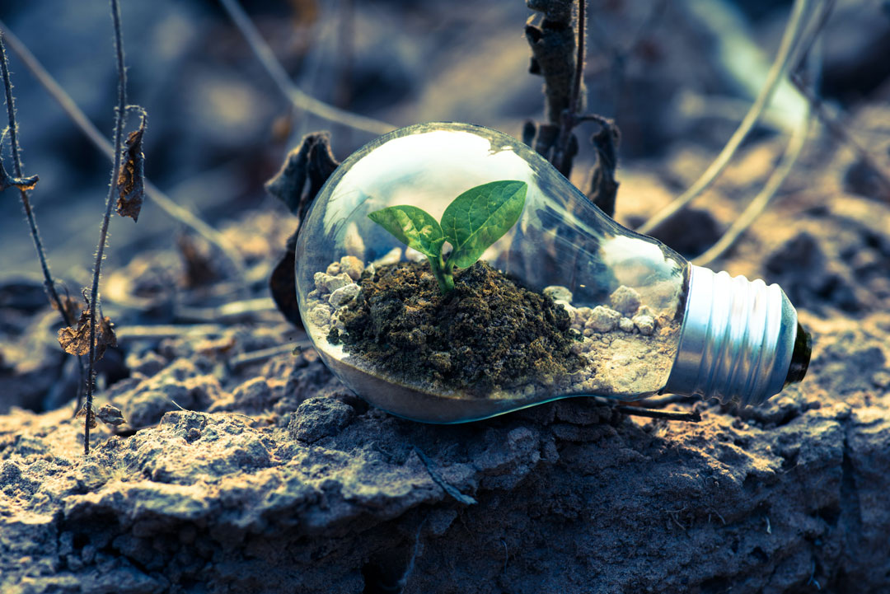

Challenge:

Soil Degradation and Loss of Fertility:
Soil degradation, caused by erosion, nutrient depletion, and inappropriate land management practices, threatens agricultural productivity and long-term sustainability.
Solution:

One solution to combat soil degradation is the implementation of Conservation Agriculture (CA). CA practices aim to improve soil health and minimize erosion by maintaining soil cover, reducing soil disturbance through minimum tillage, and promoting diverse crop rotations. These practices help preserve soil structure, increase organic matter, and enhance water retention, thus improving overall soil fertility and productivity.